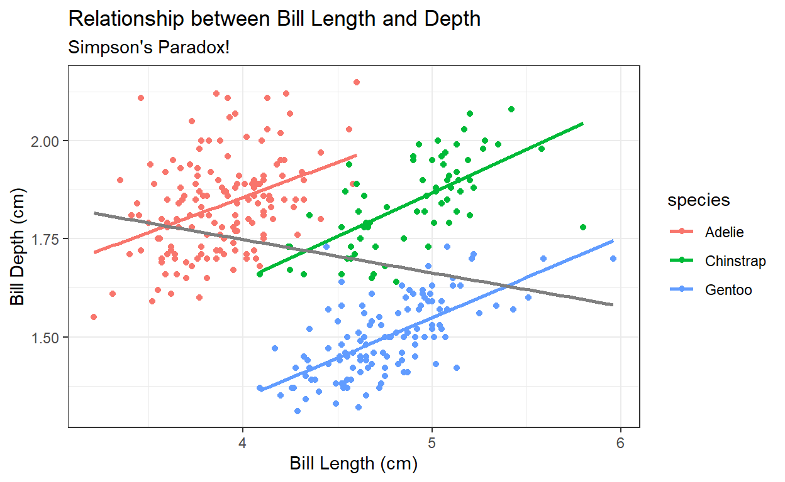
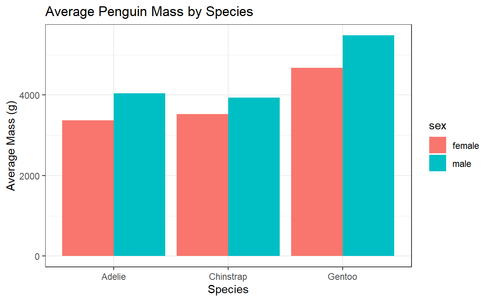

Welcome to the first day of the rest of your (coding) life. In the first two sessions, we covered base R functionality, but today we turn to a more “opinionated” R coding philosophy: the tidyverse. If you haven’t already, you should install the tidyverse using the command below:
install.packages("tidyverse")
Video Summary
What is the tidyverse?
The tidyverse is a collection R packages that share a similar philosophy regarding coding and data manipulation generally. These packages include ggplot2, purrr, dplyr, tidyr, tibble, stringr, readr, and forcats. Hadley Wickham, the creator of many of these packages and Chief Data Scientist at R Studio, has written a manifesto on what he believes to be the core tenants of the tidyverse philosophy, but many of them are fairly technical, so for now I’ll skip them.
At its core, the tidyverse aims to be a human-friendly approach to making data “tidy.” We call non-tidy data messy. Tidy data has one observation per row and one variable per column. Sounds simple, but like many things in life that is rarely the case. We will cover the core functions of tidy data manipulation below, but know that you can make things as exponentially complicated as you would like. You can load tidyverse functions like this:
I should note that you should still learn and be familiar with base R. Not all packages are tidyverse-friendly, and to read other peoples’ code you’ll have to know base R. Additionally, writing functions and packages that depend upon tidyverse functions requires loading the tidyverse into memory, which can be inefficient. Treat this as a tool (a very important one) in your toolbox, but don’t let it be your only one.
dplyr
The dplyr package sits at the core of tidy data manipulation, and is built around 5 basic functions (there are many others, but you will use these the most often):
select(): this function subsets your dataset to just the columns of data (variables you want). The base R equivalent would simply bedf[,c(vars of interest)]filter(): this function subsets the data into just the rows you want to look at. The base R equivalent would besubset()or simplydf[c(rows),]arrange(): this function sorts the data by row(s) of your choosing. The base R equivalent issort()mutate(): this function adds new variables to your dataframe. The base R equivalent is simplydf$newvarordf[,'newvar']summarise(): this function allows you to summarise your data in someway; usually used in conjunction with group_by() which allows you to summarise data by some other variable.
This last one is not a core function but it is super useful:
group_by(): this function groups your data according to a variable you give it.
Piping
Before we work with these functions, you should become familiar with the pipe operator %>%. If you have the most recent version of R installed, there is actually a native (non-tidyverse) pipe operator |>. I will use the former.
Piping helps make your code nice and easy to read, moving us away from base R nesting doll syntax and into something that reads more fluidly:
library(palmerpenguins) # Using my favorite toy dataset
df = penguins # Assign penguins dataframe to df for efficiency
df %>% head() # Equivalent to head(df)
# A tibble: 6 x 8
species island bill_length_mm bill_depth_mm flipper_length_mm
<fct> <fct> <dbl> <dbl> <int>
1 Adelie Torgersen 39.1 18.7 181
2 Adelie Torgersen 39.5 17.4 186
3 Adelie Torgersen 40.3 18 195
4 Adelie Torgersen NA NA NA
5 Adelie Torgersen 36.7 19.3 193
6 Adelie Torgersen 39.3 20.6 190
# ... with 3 more variables: body_mass_g <int>, sex <fct>, year <int>What is the pipe actually doing? Taking the first argument and passing it to the first argument in the following function:
# this reads take my dataframe called df and show me the first 10 rows of it using head()
df %>% head(10)
# A tibble: 10 x 8
species island bill_length_mm bill_depth_mm flipper_length_mm
<fct> <fct> <dbl> <dbl> <int>
1 Adelie Torgersen 39.1 18.7 181
2 Adelie Torgersen 39.5 17.4 186
3 Adelie Torgersen 40.3 18 195
4 Adelie Torgersen NA NA NA
5 Adelie Torgersen 36.7 19.3 193
6 Adelie Torgersen 39.3 20.6 190
7 Adelie Torgersen 38.9 17.8 181
8 Adelie Torgersen 39.2 19.6 195
9 Adelie Torgersen 34.1 18.1 193
10 Adelie Torgersen 42 20.2 190
# ... with 3 more variables: body_mass_g <int>, sex <fct>, year <int># it is the same as
head(df, 10)
# A tibble: 10 x 8
species island bill_length_mm bill_depth_mm flipper_length_mm
<fct> <fct> <dbl> <dbl> <int>
1 Adelie Torgersen 39.1 18.7 181
2 Adelie Torgersen 39.5 17.4 186
3 Adelie Torgersen 40.3 18 195
4 Adelie Torgersen NA NA NA
5 Adelie Torgersen 36.7 19.3 193
6 Adelie Torgersen 39.3 20.6 190
7 Adelie Torgersen 38.9 17.8 181
8 Adelie Torgersen 39.2 19.6 195
9 Adelie Torgersen 34.1 18.1 193
10 Adelie Torgersen 42 20.2 190
# ... with 3 more variables: body_mass_g <int>, sex <fct>, year <int>Whenever you see the pipe, say the words “then” in your head. For example, say I wanted to subset my data to just Adelie and Gentoo penguins, then look at only the bill_length_mm and flipper_length_mm columns. In base r, this would look like this:
In tidy syntax, we can use pipes (adding an extra step to print the first 10 rows)
df %>%
filter(species %in% c("Adelie","Gentoo")) %>%
select(bill_length_mm, flipper_length_mm) %>%
head(10)
# A tibble: 10 x 2
bill_length_mm flipper_length_mm
<dbl> <int>
1 39.1 181
2 39.5 186
3 40.3 195
4 NA NA
5 36.7 193
6 39.3 190
7 38.9 181
8 39.2 195
9 34.1 193
10 42 190This reads: take my dataset called df, then filter by species to only Adelie and Gentoo penguins, then select just two variables of interest (then print the first 10 rows). While this syntax may be “longer”, it is infinitely more readable, makes debugging much easier, and doesn’t require you to keep track of trailing/missing parentheses and/or brackets.
Now we’ll go into each of these functions more in-depth:
select()
If you just want to look at certain variable in a dataframe, select() helps you do that. For example, if I just want the penguin body mass, I could use:
# Using pipe:
df %>%
select(body_mass_g)
# Same as:
select(df, body_mass_g)
# In base R:
df[,"body_mass_g"]
# Alternatively:
df$body_mass_g
You can also select more than one variable, a range of variables, or omit certain variables:
# select species and body_mass_g
df %>% select(species, body_mass_g)
# A tibble: 344 x 2
species body_mass_g
<fct> <int>
1 Adelie 3750
2 Adelie 3800
3 Adelie 3250
4 Adelie NA
5 Adelie 3450
6 Adelie 3650
7 Adelie 3625
8 Adelie 4675
9 Adelie 3475
10 Adelie 4250
# ... with 334 more rows# select variables bill_length_mm through flipper_length_mm
df %>% select(bill_length_mm:flipper_length_mm)
# A tibble: 344 x 3
bill_length_mm bill_depth_mm flipper_length_mm
<dbl> <dbl> <int>
1 39.1 18.7 181
2 39.5 17.4 186
3 40.3 18 195
4 NA NA NA
5 36.7 19.3 193
6 39.3 20.6 190
7 38.9 17.8 181
8 39.2 19.6 195
9 34.1 18.1 193
10 42 20.2 190
# ... with 334 more rows# select everything but year
df %>% select(-year)
# A tibble: 344 x 7
species island bill_length_mm bill_depth_mm flipper_length_mm
<fct> <fct> <dbl> <dbl> <int>
1 Adelie Torgersen 39.1 18.7 181
2 Adelie Torgersen 39.5 17.4 186
3 Adelie Torgersen 40.3 18 195
4 Adelie Torgersen NA NA NA
5 Adelie Torgersen 36.7 19.3 193
6 Adelie Torgersen 39.3 20.6 190
7 Adelie Torgersen 38.9 17.8 181
8 Adelie Torgersen 39.2 19.6 195
9 Adelie Torgersen 34.1 18.1 193
10 Adelie Torgersen 42 20.2 190
# ... with 334 more rows, and 2 more variables: body_mass_g <int>,
# sex <fct>Additionally, you can select based on characteristics of the variables names, such as containing “length” or starting with “bill”:
# select variables that contain "length"
df %>% select(contains("length"))
# A tibble: 344 x 2
bill_length_mm flipper_length_mm
<dbl> <int>
1 39.1 181
2 39.5 186
3 40.3 195
4 NA NA
5 36.7 193
6 39.3 190
7 38.9 181
8 39.2 195
9 34.1 193
10 42 190
# ... with 334 more rows# select variables beginning with "bill"
df %>% select(starts_with("bill"))
# A tibble: 344 x 2
bill_length_mm bill_depth_mm
<dbl> <dbl>
1 39.1 18.7
2 39.5 17.4
3 40.3 18
4 NA NA
5 36.7 19.3
6 39.3 20.6
7 38.9 17.8
8 39.2 19.6
9 34.1 18.1
10 42 20.2
# ... with 334 more rowsfilter()
The filter() function allows you to subset rows based on variable attributes. In base R, there are multiple options for this. Say I wanted to subset just to Chinstrap penguins in df:
# One option using subset()
chinstrap_df = subset(df, species == "Chinstrap")
# Another using just brackets (note the use of a comma at the end,
# which indicates we want all the columns returned as well):
chinstrap_df = df[df$species == "Chinstrap",]
Note that I’m saving the result to a separate dataframe, but this can be inefficient when you have dozens of subsets at one. While you may want to do operations like this later on:
mean(chinstrap_df$bill_length_mm, na.rm = T)
[1] 48.83382… note that we can do the same thing without cluttering our R environment:
mean(df$bill_length_mm[df$species == "Chinstrap"], na.rm = T)
[1] 48.83382Although this is admittedly a bit cluttered. filter() cleans the subsetting up a bit:
df %>% filter(species == "Chinstrap")
You can also nest this inside another function, but we’ll get into alternatives to that with summarise():
filter() can also handle more complicated subsets as well:
arrange()
The arrange() function is used to order the data. This is more useful when you have continuous variables with large numbers of values and you want to look at the extremes. This is super useful when you have country data and want to know which country has the highest or lowest of X variable.
For this example I’m going to use the gapminder country data, which is more appropriate for this example:
Rows: 1,704
Columns: 6
$ country <fct> "Afghanistan", "Afghanistan", "Afghanistan", "Afgh~
$ continent <fct> Asia, Asia, Asia, Asia, Asia, Asia, Asia, Asia, As~
$ year <int> 1952, 1957, 1962, 1967, 1972, 1977, 1982, 1987, 19~
$ lifeExp <dbl> 28.801, 30.332, 31.997, 34.020, 36.088, 38.438, 39~
$ pop <int> 8425333, 9240934, 10267083, 11537966, 13079460, 14~
$ gdpPercap <dbl> 779.4453, 820.8530, 853.1007, 836.1971, 739.9811, ~Say you want to look at which country has the highest life expectancy. You can use arrange(), which defaults to arranging from lowest to highest, but you can switch this using desc():
gapminder %>%
arrange(desc(lifeExp)) %>%
select(country,lifeExp,year) %>%
head()
# A tibble: 6 x 3
country lifeExp year
<fct> <dbl> <int>
1 Japan 82.6 2007
2 Hong Kong, China 82.2 2007
3 Japan 82 2002
4 Iceland 81.8 2007
5 Switzerland 81.7 2007
6 Hong Kong, China 81.5 2002Okay, great, Japan. But notice this data is arranged by country-year. That doesn’t makes sense. Let’s just look at highest life expectancy in the latest year in the data.
# A tibble: 6 x 6
country continent year lifeExp pop gdpPercap
<fct> <fct> <int> <dbl> <int> <dbl>
1 Japan Asia 2007 82.6 127467972 31656.
2 Hong Kong, China Asia 2007 82.2 6980412 39725.
3 Iceland Europe 2007 81.8 301931 36181.
4 Switzerland Europe 2007 81.7 7554661 37506.
5 Australia Oceania 2007 81.2 20434176 34435.
6 Spain Europe 2007 80.9 40448191 28821.You can arrange() by several variables, too. Let’s say we want to arrange() by year and gdpPercap. This means you won’t have to use the filter() function
gapminder %>%
arrange(desc(year),desc(gdpPercap)) %>%
head()
# A tibble: 6 x 6
country continent year lifeExp pop gdpPercap
<fct> <fct> <int> <dbl> <int> <dbl>
1 Norway Europe 2007 80.2 4627926 49357.
2 Kuwait Asia 2007 77.6 2505559 47307.
3 Singapore Asia 2007 80.0 4553009 47143.
4 United States Americas 2007 78.2 301139947 42952.
5 Ireland Europe 2007 78.9 4109086 40676.
6 Hong Kong, China Asia 2007 82.2 6980412 39725.#or by continent
gapminder %>%
filter(year == max(year)) %>%
arrange(desc(continent),desc(gdpPercap)) %>%
select(year, country, continent, gdpPercap) %>%
head()
# A tibble: 6 x 4
year country continent gdpPercap
<int> <fct> <fct> <dbl>
1 2007 Australia Oceania 34435.
2 2007 New Zealand Oceania 25185.
3 2007 Norway Europe 49357.
4 2007 Ireland Europe 40676.
5 2007 Switzerland Europe 37506.
6 2007 Netherlands Europe 36798.mutate()
Use mutate() to add new variables (columns) to your dataframe. This is probably my most frequently used function in the tidyverse.
Returning to our penguins dataframe df, note our weight measurement is in grams. In base R, if I wanted to create a mass in kilograms variable, it would look something like this:
df$body_mass_kg = df$body_mass_g/1000 # Every kg is 1000 g
Easy enough for one variable, but a bit clunky when you want to create many. mutate() makes it a bit easier:
df %>% mutate(body_mass_kg = body_mass_g/1000)
Cool, but the real power is in being able to do this with multiple variables at once, and even using variables you just created to make new ones:
df %>%
mutate(bill_length_cm = bill_length_mm/10,
bill_depth_cm = bill_depth_mm/10,
bill_ratio = bill_length_cm/bill_depth_cm) %>% # Yes I know this would be the same with mm
arrange(desc(bill_ratio)) %>%
select(bill_ratio) %>%
head()
# A tibble: 6 x 1
bill_ratio
<dbl>
1 3.61
2 3.51
3 3.51
4 3.49
5 3.46
6 3.45We can also preview a bit of ggplot2 by piping our result directly into a plot, but that is beyond the scope of this particular bootcamp session:
df %>%
mutate(bill_length_cm = bill_length_mm/10,
bill_depth_cm = bill_depth_mm/10) %>%
ggplot(aes(x = bill_length_cm, y = bill_depth_cm, color = species)) + # ggplot uses + instead of %>%
geom_point() +
geom_smooth(method = "lm", se = F) +
geom_smooth(aes(group = 1), method = "lm", se = F, color = "grey50") +
theme_bw() +
labs(title = "Relationship between Bill Length and Depth",
subtitle = "Simpson's Paradox!",
x = "Bill Length (cm)", y = "Bill Depth (cm)")

summarise()
Finally, we’ll focus on computing summary statistics with summarise() (same as summarize()), especially in conjunction with group_by(), which does computation within groups.
If we just wanted to get the average weight of all penguins in our dataset, we could do so very simply:
df %>% summarise(avg_mass = mean(body_mass_g, na.rm = T))
# A tibble: 1 x 1
avg_mass
<dbl>
1 4202.Like mutate(), we can compute multiple summary statistics at once:
df %>%
summarise(
avg_mass = mean(body_mass_g, na.rm = T),
med_mass = median(body_mass_g, na.rm = T),
max_mass = max(body_mass_g, na.rm = T),
min_mass = min(body_mass_g, na.rm = T),
n = n() # Gives number of observations (by group if paired with group_by())
)
# A tibble: 1 x 5
avg_mass med_mass max_mass min_mass n
<dbl> <dbl> <int> <int> <int>
1 4202. 4050 6300 2700 344As we saw above, though, grouping matters. So perhaps we want to get the average mass by species of penguin. This can be done by using group_by() before summarise(). Let’s also combine this with another ggplot2 demonstration:
df %>%
group_by(species) %>%
summarise(avg_mass = mean(body_mass_g, na.rm = T)) %>%
ggplot(aes(x = species, y = avg_mass)) +
geom_bar(stat = 'identity') +
theme_bw() +
labs(title = "Average Penguin Mass by Species",
x = "Species", y = "Average Mass (g)")

Like arrange(), we can also group_by() multiple variables. For example, we can look at the average mass by both species and sex:
df %>%
filter(!is.na(sex)) %>% # Remove missing sex
group_by(species, sex) %>%
summarise(avg_mass = mean(body_mass_g, na.rm = T)) %>%
ggplot(aes(x = species, y = avg_mass, fill = sex)) +
geom_bar(stat = 'identity', position = "dodge") +
theme_bw() +
labs(title = "Average Penguin Mass by Species",
x = "Species", y = "Average Mass (g)")

Note that all grouping variables will continue to be available in the dataframe after summarise(), but non-grouping variables will not.
across()
A recent addition to the tidyverse arsenal is the across() function, which helps shorten otherwise lengthy code. The purpose of across() is to perform the same function across multiple variables. Say, for example, I wanted to compute the mean of every numeric variable in my data. Without across(), I would have to write a separate line for every variable within summarise(). With across(), however, it gets much shorter:
df %>%
summarise(across(where(is.numeric), ~ mean(., na.rm = T)))
# A tibble: 1 x 6
bill_length_mm bill_depth_mm flipper_length_mm body_mass_g year
<dbl> <dbl> <dbl> <dbl> <dbl>
1 43.9 17.2 201. 4202. 2008.
# ... with 1 more variable: body_mass_kg <dbl>Obviously the year variable should be treated more as a factor than a numeric, but you get the point. Let’s break down exactly what is happening here: I’m summarising the entire dataset for variables that are numeric (where(is.numeric)), applying the mean() function and specifying that I want NAs removed.
We’re starting to get into more advanced notation here, so don’t worry if you need to slow down to understand it a bit more. across requires the second argument to be a function, so the tilde ~ is there to represent that the following statement should be evaluated as a function. Within the mean() function, we still need to tell R exactly what we are taking the mean of. In this case, the period . represents the values in each of the columns. This is common in tidyverse-style coding when values aren’t being explicitly defined within functions (ie after piping).
You can also use across() in conjunction with mutate(). For example, I could standardize all numeric variables to be on a 0-1 scale with the following:
df %>%
mutate(across(where(is.numeric),
~ (. - min(., na.rm = T)) / (max(., na.rm = T) - min(., na.rm = T))
)
) %>%
select(where(is.numeric)) %>%
drop_na() %>% # Drops any rows with NAs in any column
head()
# A tibble: 6 x 6
bill_length_mm bill_depth_mm flipper_length_mm body_mass_g year
<dbl> <dbl> <dbl> <dbl> <dbl>
1 0.255 0.667 0.153 0.292 0
2 0.269 0.512 0.237 0.306 0
3 0.298 0.583 0.390 0.153 0
4 0.167 0.738 0.356 0.208 0
5 0.262 0.893 0.305 0.264 0
6 0.247 0.560 0.153 0.257 0
# ... with 1 more variable: body_mass_kg <dbl>A lot going on there, but you should notice that the structure is the same. I’m just passing a more complicated function where I take the value of each observation, substract from it the minimum of that variable, then divide it by the difference between the maximum and minimum values. I’m also using liberal use of parentheses, so it helps to line separate them when coding to make clear what end-parentheses corresponds to which open-parentheses.
Test your knowledge
Follow THIS LINK for a quick interactive knowledge check.